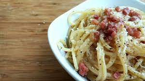

Carbonara

Description
The Pasta alla Carbonara is one of the most famous and iconics italian dishes. It's known and
appreciated
all across the world thanks to its incredible flavours and its easy preparation.
Ingredients
- Spaghetti 12 OZ
- Guanciale 4 OZ
- 4 very fresh egg yolks
- Aged Pecorino cheese
- Grated Grana Padano cheese
- Grated salt
- Black Pepper
Pay attention! This ingredients are the right quantities for about 4 people, if there are more
or less people adjust them!
Steps
- Cut the guanciale into 1/4 inch layers then into long 2 inch strips;
- Combine the egg yolks with the grated cheese and a pinch of black pepper;
- Heat 1 spoon of oil in a frying pan and brown the strips of guanciale until crisp;
- Cook the pasta in salted water, drain it once it's cooked al dente;
- Transfer the pasta in the pan in which you left the guanciale before and pour a spoon of the cooking water;
- Mix them together and add the yolks and cheese mixture;
- Season with freshly-milled black pepper and serve immediately on heated plates.